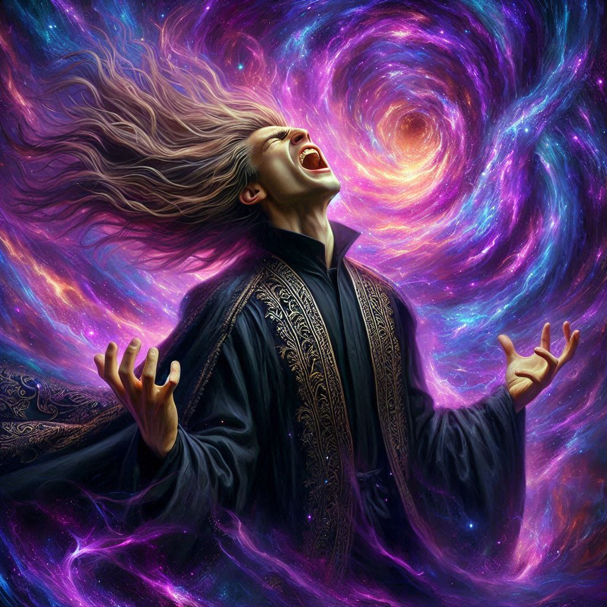

Baider's Sacrifice
The air snaps and pops with tendrils of dark energy as you square off against Varis, the dark elf prince whose twisted ambitions threaten to plunge the world into darkness. His glowing eyes lock onto you, and you feel the weight of centuries of malevolent power bearing down on your shoulders. Your hands grip your blades tighter, the cold steel trembling under the strain of the magic swirling in the cavern.
Behind you, the portal is expanding. Shadowy tendrils lash out like living things, dark and insidious, stretching into the world, hungry for destruction. Jorsh is faltering, the dark magic pulling at him, draining his strength. You can see the agony in his eyes, his mind torn between vengeance and survival.
Baider stands beside you, his face grim and determined, the flicker of torchlight reflecting off the battle-worn armor he wears. He's preparing for something—something final. You can sense it.
"You can't win, foolish girl," Varis sneers, his voice low and venomous. "This world is already mine. You're just too blind to see it."
But you won’t give in. You’ve come too far, sacrificed too much to let Varis win now. With a cry, you charge at him, your blades flashing in the dim light. Varis meets your assault with a wicked smile, his own sword moving with unnatural speed. The clash of steel rings through the caverns, each strike sending a shockwave of energy through your arms.
Varis is fast, too fast. His dark magic surges with every swing, and you can feel yourself being pushed back. His eyes flare as he presses the attack, forcing you to dodge, parry, and retreat. Sweat drips down your brow, your muscles scream in protest, but you can't stop. You won't.
"You're weak," Varis growls, his blade knocking yours aside. He swings for your head, and you barely manage to duck, the blade whistling past your ear. "You've always been a weak little girl, haven’t you?"
His words sting, but they ignite something in you—a fire, a defiance born of years of pain and loss. You spin, bringing your sword up in a wide arc, catching Varis off guard. The tip of your blade grazes his cheek, drawing blood. He snarls, anger flashing in his eyes.
"You think you can stop me?!" he roars, his voice echoing through the cavern. "I am the future! I am the darkness that will swallow this world!"
But you don’t answer. Instead, you ready yourself for the next strike. This time, you aim for his heart.
Before you can move, a scream fills the air. It’s Jorsh. You glance over and see him crumple under the weight of the dark magic, his body convulsing as the portal feeds on his life force. His defiance, his thirst for revenge, is crumbling before your eyes.
"No!" you shout, heart racing.
Your moment of distraction is all Varis needs. He slams his sword against yours, knocking it from your hands. The force of the blow sends you crashing to the ground once again, the wind knocked from your lungs. Varis stands over you, his blade raised for the final blow.
And then Baider moves.
With a roar of primal fury, Baider charges Varis, his massive axe swinging in a deadly arc. Varis barely has time to react before the axe cleaves through his chest, the dark elf prince’s eyes widening in shock. Blood sprays from the wound, and Varis staggers backward, his grip on the portal faltering.
"Baider, no!" you scream, scrambling to your feet.
But Baider doesn’t stop. He drives Varis toward the portal, his expression one of grim determination. He knows what he’s doing. He’s sacrificing himself.
"Get out of here!" Baider shouts, his voice a thunderous command.

You freeze, your heart breaking. You want to stop him, to pull him back, but you know it’s too late. Baider locks eyes with you, offering a sad smile, before plunging into the swirling darkness with Varis. The portal trembles, collapsing in on itself as Baider sacrifices his life to close it. The dark magic shatters, the shadowy tendrils dissipating into nothingness.
You scream his name, but there’s no answer. The portal is gone. Baider is gone.
The cavern falls silent.
The weight of what just happened crashes down on you, and you sink to your knees, tears burning in your eyes. Baider, the man who was like a father to you, sacrificed everything to save you. To save the world. The loss hits you like a wave, your deepest fear of abandonment realized once more.
But you can’t fall apart. Not now. Baider’s sacrifice wasn’t in vain. He gave his life so you could keep fighting, so you could keep living. And you will. For him. For everyone.
Elias and Onyx approach slowly, the old dwarf limping, holding a roll of chains in his hands, still shackled to one ankle. “Kira, lass. I’m sorry,” Onyx says, his gravelly voice rumbling through the chamber.
“I never got to say thank you,” you lament. “I was too proud and too stubborn.”
Onyx sniffs and wipes his bulbous old nose. “Baider and I have been at odds for more than a decade, but we talked for the first time three days ago. He was sad, Kira. Sad that he treated you so gruffly. Sad that he never told you he was proud of you.”
“He– he was proud of me?” You bring your hand to your mouth and swallow a lump of emotion in the back of your throat. “He said that?”
“Aye, lass.”
Suddenly, there is a flash of light in the middle of the portal and the center of the orifice swirls again with unholy magic. Jorsh screams behind you. You spin around to see him tracing arcane symbols in the air with his hands and chanting something unintelligible.